Created: 2017-08-22 Tue 13:07
belaste repräsentiert.(belaste betrag) reduziere den Kontostand um betrag und gebe den
neuen Kontostand als Resultat zurück.Annahme: Kontostand zu Beginn 100. Dann ist folgende Ausdruckssequenz denkbar:
> (belaste 30) 70 > (belaste 30) 40 > (belaste 50) konto-ueberzogen > (belaste 20) 20
(belaste 30) liefert
unterschiedliche Ergebnisse!belaste verhält sich nicht mehr wie eine mathematische Funktion!Mögliche Implementierung des Bankkontos:
;; globlale Variable (def *konto* (atom 100)) ;; belaste: (number -> (mixed number symbol)) ;; Effekt: bucht vom konto betrag ab, liefert neuen ;; Kontostand als Resultat, falls Konto nicht ueberzogen (def belaste (fn [betrag] (cond (>= @*konto* betrag) (do (swap! *konto* - betrag) @*konto*) :else 'konto-ueberzogen))
atom, swap! und doatom(def v (atom e)) wird ein
Atom (eine änderbare Speicherzelle) mit dem Anfangswert e
erzeugt und ein Verweis auf sie in v abgelegt. Auf den Wert von
v kann dann mit (deref v) oder @v zugegriffen werden.swap!(swap! atom f ...)(f @atom ...) ausgewertet. Das Resultat der Auswertung wird der neue Wert des Atoms.do(do \(e_{ 1}\ e_{2} \ldots e_{n}\) ) werden wie folgt ausgewertet:
do-Ausdrucks.*konto*
Definition einer lokalen Variablen konto:
(def belaste (let [konto (atom 100)] (fn [betrag] (cond (>= @konto betrag) (do (swap! konto - betrag) @konto) :else 'konto-ueberzogen))))
belaste wie vorher.let-Ausdrucks erfolgt nur einmal bei
der Definition der Funktion belaste.belaste stellt einen ersten Ansatz dar, Daten und
Prozeduren zusammen zu bringen.;; nimmt einen Betrag als Startkapital eines Kontos ;; und erzeugt eine "belaste-Funktion" ;; erzeuge-konto: (number -> (number -> (mixed number symbol))) (def erzeuge-konto (fn [startwert] (let [konto (atom startwert)] (fn [betrag] (cond (>= @konto betrag) (do (swap! konto - betrag) @konto) :else 'konto-ueberzogen)))))
(def konto1 (erzeuge-konto 500)) (def konto2 (erzeuge-konto 600)) (konto1 200) ;==> 300 (konto2 400) ;==> 200 (konto2 400) ;==> konto-ueberzogen (konto2 100) ;==> 100
Zur Wiederholung das Ersetzungsmodell für Funktionsanwendungen:
Ein Term der Form:
\[(operator\ operand_{1}\ \ldots operand_{n})\]
wird wie folgt ausgewertet:
Gegenbeispiel:
(def k1 (erzeuge-konto 100)) (def k2 (erzeuge-konto 100))
k1 und k2 sind verschiedene Bezeichner für den gleichen Wert. Die
folgenden Ausdrücke liefern aber unterschiedliche Werte:
(k1 10) ==> 90 (k1 10) ==> 80 (k2 10) ==> 90
Was passiert hier?
(def k1 (erzeuge-konto 100)) (def k2 k1) (k1 10) (k2 10) ==> ???
Nach dem Ersetzungsmodell würde aus
((erzeuge-konto 500) 150) = (((fn [startwert] (let [konto (atom startwert)] (fn [betrag] (cond (>= @konto betrag) (do (swap! konto - betrag) @konto) :else 'konto-ueberzogen)))) 500) 150) = ((fn [betrag] (cond (>= 500 betrag) (do (swap! konto - betrag) 500) ;;***** hier darf =konto= offensichtlich nicht ersetzt werden! :else 'konto-ueberzogen)) 150)
Fortsetzung der Auswertung:
= ((fn [betrag] (cond (>= 500 betrag) (do (swap! konto - betrag) 500) :else 'konto-ueberzogen)) 150) = (cond (>= 500 150) (do (swap! konto (- 500 150)) 500) :else 'konto-ueberzogen) = (do (swap! konto (- 500 150)) 500) = (do (swap! konto 350) 500) = 500
def) Werte (auch Funktionen/Prozeduren) an
Bezeichner gebunden.(def z 27)(def s "Mozart")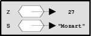
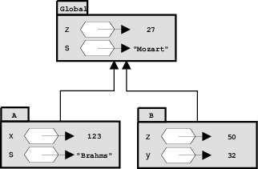
Die Variable z ist
gebunden.
x an 123s an "Brahms"z an 27swap! kann die Bindung einer Variablen (eines atom) verändert werden.Die Prozedurdefinition
(def quadrat (fn [x] (* x x)))
führt zu folgendem Umgebungsdiagramm:
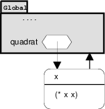
Die Darstellung einer Prozedur besteht aus drei Teilen:
x)(* x x))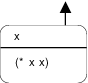
Regel für die Auswertung von Prozeduranwendungen im Umgebungsmodell:
Auswertung von (quadrat 17):
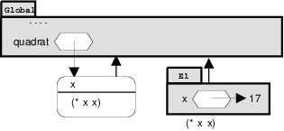
Mit den Definitionen
(def quadrat (fn [x] (* x x))) (def summe-der-quadrate (fn [x y] (+ (quadrat x) (quadrat y)))) (def f (fn [a] (summe-der-quadrate (+ a 1) (* a 2))))
soll der Ausdruck (f 3)) ausgewertet werden.
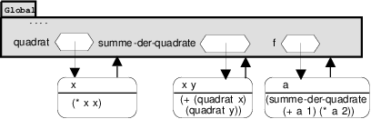
(f 3)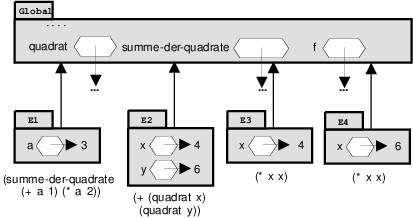
Wir greifen auf das Konto-Beispiel zurück:
(def erzeuge-konto (fn [startwert] (let [konto (atom startwert)] (fn [betrag] (cond (>= @konto betrag) (do (swap! konto - betrag) @konto) :else 'konto-ueberzogen)))))
… und werten der Reihe nach die Ausdrücke
(def konto1 (erzeuge-konto 100)) (konto1 50)
aus.
erzeuge-konto …… in der globalen Umgebung:
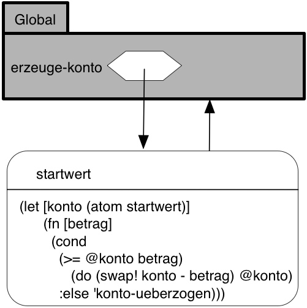
(def konto1 (erzeuge-konto 100)) …(erzeuge-konto 100) ist ein neuer Rahmen
(E1) anzulegen, in dem der formale Parameter startwert an 100
gebunden wird und die lokale Defintion des Atoms konto hinterlegt wird.erzeuge-konto – ein
fn-Ausdruck – auszuwerten. Es entsteht also ein neues
Prozedurobjekt mit
betrag,(cond ... underzeuge-konto, welches in der globalen Umgebung an den
Bezeichner konto1 gebunden wird.
(def konto1 (erzeuge-konto 100))
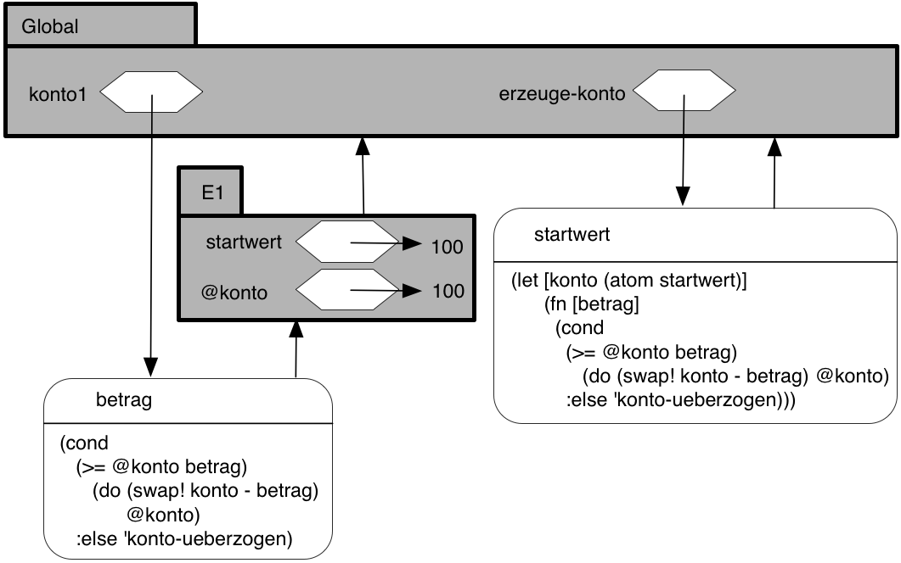
(konto1 50) …
Es ist ein neuer Rahmen (E2) anzulegen, in dem der formale
Parameter betrag von konto1 an 50 gebunden wird.
Beachte: Die umschließende Umgebung für E2 ist E1, nicht die
globale Umgebung, weil E1 die Umgebung des Prozedurobjekts
konto1 ist.
Innerhalb von E2 wird der Rumpf des Prozedurobjekts konto1
ausgewertet.
Beachte: Dieser Ausdruck referenziert sowohl betrag als auch
konto.
betrag wird in E2 gefunden.konto wird in der umschließenden Umgebung E1 gefunden.(konto1 50)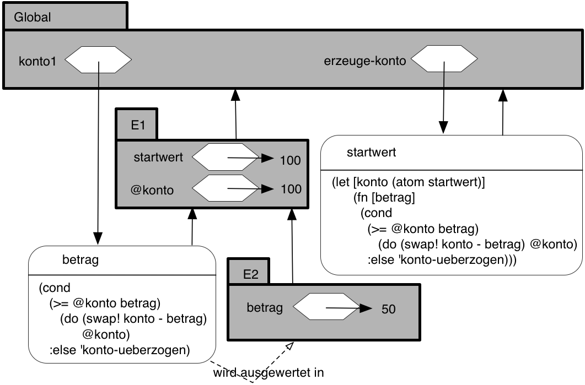
(swap! konto ... )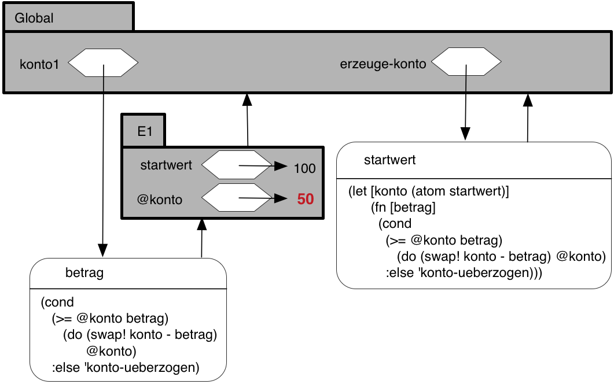
(swap! konto ... ) wird die Bindung von
@konto in E1 geändert.konto1 entfällt E2, da die
Prozeduranwendung, die E2 erzeugt hat, beendet ist.konto1 erneut aufgerufen würde, würde eine neue Umgebung E2
angelegt werden, die als umschließende Umgebung wieder E1 hätte.konto1.